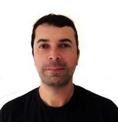

Sobre
O Python User Group do Vale do Paraíba (PUG-Vale) é uma iniciativa comunitária que tem o objetivo de reunir os desenvolvedores e demais interessados na linguagem de programação Python e em suas tecnologias associadas.
A segunda edição aconteceu em 2015, e o intuito é retomarmos os encontros agora com certa frequência.
Através de palestras, painéis de debates e networking buscamos difundir a tecnologia Python na região do Vale do Paraíba, que tem um potencial imenso de desenvolvimento tecnológico.
Ajude-nos na divulgação e até o evento!
Localização
Faculdade Bilac
R. Francisco Paes, 84. São José dos Campos, SP
Palestrantes
-
09h20 Django - Ridiculamente Rápido
Mateus Vieira
Recifense, apaixonado por macaxeira com carne de sol e queijo, Bacharel em Ciências da Computação na Universidade Católica de Pernambuco, membro do PUG-PE, Programador autodidata e anos de Python.
-

10h00 12 passos para melhoria de projetos de software
Paulo Luan
Mais de 7 anos de xp em desenvolvimento, trabalhou nas maiores consultorias de software do país em projetos de grande relevância como o backend do internet banking de um dos maiores bancos da américa latina e um ecommerce global de vendas da Motorola. Apaixonado por software livre, hacker-ativista e aspirante a empreendedor.
-
11h10 Python e Deep Learning, feito um para o outro!
Aditya Tantravahi
Mestrado em Computação Aplicada pelo INPE , entusiasta do mundo de dados a analytics, além de alguns anos brincando em empresas e startups com ciência de dados, machine learning e outras coisas mais!
-
11h50 Raspadinha de dados
Bianca Berdugo
Joseense, formada em engenharia da computação, full stack na empresa Brasil317 e futura cientista de dados (fé no pai).
-

12h30 Física divertida com VPython!
Paulo Giovani
Meu nome é Paulo Giovani e sou natural de Campos do Jordão, SP. Atualmente trabalho como professor de programação e banco de dados no Instituto Federal de Educação, Ciência e Tecnologia de São Paulo, no Câmpus da cidade de Campos do Jordão. Sou graduado em Computação Científica pela Universidade de Taubaté (UNITAU) e tenho mestrado em Computação Aplicada pelo Instituto Nacional de Pesquisas Espaciais (INPE). Minhas áreas de interesse incluem a programação em Python, banco de dados, mineração de dados, computação gráfica e desenvolvimento de games, dentre outros.
Agenda
| Horário | Palestrante | Descrição |
|---|---|---|
| 9h00 | Credenciamento e Apresentação | - |
| 09h20 | Django - Ridiculamente Rápido | Por que Django? Django torna o desenvolvimento de excelentes aplicações WEB mais rápido, fácil e com menos códigos sem perder a qualidade, confiabilidade e robustez. |
| 10h00 |
12 passos para melhoria de projetos de software
|
Desenvolver um projeto de software não é uma tarefa simples, principalmente quando se faz necessário cumprir prazos e manter a qualidade. O Joel test sao 12 passos simples criados pelo fundador do Stack overflow para melhorar a qualidade do produto final apontando temas recorrentes de projetos de software. A palestra abordará os 12 passos fazendo um paralelo com exemplos de ferramentas e projetos reais. |
| 10h40 | Coffee Break | - |
| 11h10 | Python e Deep Learning, feito um para o outro! | Deep Learning é a onda do momento e Python uma linguagem de programação fantástica. As redes neurais haviam sido esquecidas por um tempo mas com o poder computacional que temos hoje eles estão de volta, tendo se tornado um dos principais e mais usados métodos de Machine Learning ( Aprendizagem Automática). Embora a matemática por trás dela seja dificil, hoje temos inúmeros pacotes que facilitam o uso de maneira que com conhecimentos básicos de Estatística , Cálculo Diferencial e Algebra Linear um iniciante consegue fazer coisa incríveis com redes neurais! |
| 11h50 | Raspadinha de dados | Tanta informação preciosa disponível publicamente..como fazer a raspagem destes dados? E o mais importante, como fazer a indexação e pesquisas relevantes destes dados? Entenda como utilizamos Python, Selenium e ElasticSearch para fazer esta raspadinha de dados sem gelar a cabeça. |
| 12h30 | Física divertida com VPython! | O VPython é um módulo para a criação de gráficos 3D que atua em conjunto com a linguagem Python. Ele pode ser utilizado para criar diversos tipos de animações, tanto para diversão quanto como para uso educacional. Nessa palestra veremos como essa ferramenta pode ser empregada para auxiliar no estudo e aprendizagem de conceitos que envolvem leis simples da Física. |